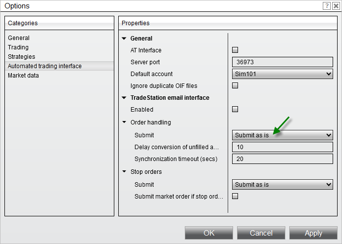

|
<< Click to Display Table of Contents >> Stop Order Handling |


|
Stop Order Handling
|
<< Click to Display Table of Contents >> Stop Order Handling |
|
There are several Stop Order Handling options available for the signals sent from TradeStation. All Stop Order Handling options are available by selecting the Tools menu in the Control Center, selecting the menu name Options, selecting the Automated Trading interface category, and setting the Order handling "Submit" option to "Submit as is".

If you have "Submit market order on TS fill" or "Submit and forget" enabled via Order Handling Options, the following Stop Order Handling is ignored.
|
 How to submit stop orders "as-is"
How to submit stop orders "as-is"
Submit "as-is"Submits the stop order as specified. |
 How to convert to stop-limit orders
How to convert to stop-limit orders
Convert to stop-limitWill convert a stop order to a stop-limit order. When this option is selected, you will have a property displayed to set the limit price is calculated based on the user defined "Limit price offset as ticks" value. |
 How to convert to simulated stop-market
How to convert to simulated stop-market
Convert to Simulated Stop-MarketSubmits a simulated stop-market order which is a local PC held order that submits a market order once the stop price is hit. |
 How to submit market order if stop order was rejected
How to submit market order if stop order was rejected
Submit market order if stop order was rejectedSubmits a market order in the event that a stop order is rejected for any reason.
Behavior as follows: 1.Stop order worse than current last traded price --> Market order submitted (desired outcome) 2.Stop order rejected due to insufficient funds --> Market order submitted and also rejected (not desired but no risk) 3.Stop order rejected due to price outside of range --> Market order submitted and likely filled (risky) 4.Stop order rejected due to limit price worse than stop price --> Market order submitted and likely filled (risky)
|